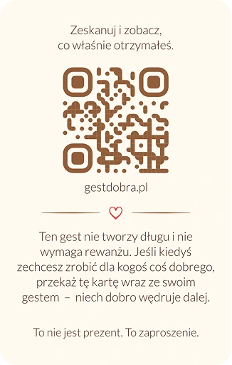
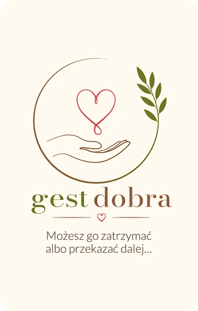
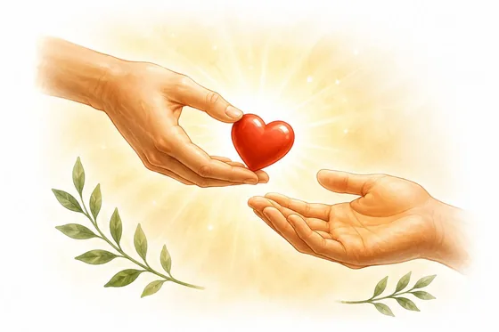
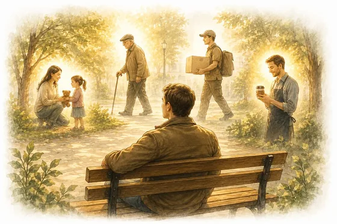

Это поступок свободы
Когда кто-то даёт нам что-то, не ожидая платы, у нас часто возникает желание немедленно отплатить тем же. Gest Dobra останавливает этот расчёт. Он позволяет принять добро без ощущения, что нужно сразу «свести счёты».
Gest Dobra — по-польски «жест доброты» — это бескорыстный добрый поступок одного человека по отношению к другому
Кто-то сделал для вас доброе дело, не ожидая платы или ответной услуги
Вы ничего не должны
Если однажды у вас появится возможность, подарите такую же бескорыстную доброту кому-нибудь ещё


Когда кто-то даёт нам что-то, не ожидая платы, у нас часто возникает желание немедленно отплатить тем же. Gest Dobra останавливает этот расчёт. Он позволяет принять добро без ощущения, что нужно сразу «свести счёты».
Когда кто-то даёт нам что-то, не ожидая платы, у нас часто возникает желание немедленно отплатить тем же. Gest Dobra останавливает этот расчёт. Он позволяет принять добро без ощущения, что нужно сразу «свести счёты».
Gest Dobra предназначен не только для тех, кто нуждается в помощи, более уязвим или переживает трудный период. Он — для человека. Для каждого. Он не навешивает ярлыков, не судит и не делит людей на категории.
Gest Dobra — не маркетинговая кампания, не скидка и не рекламный подарок. Он может принять форму подаренного товара или услуги, оплаченного счёта, практической помощи, времени, внимания, защиты более уязвимого человека или незаметного решения чьей-то проблемы.
Добро не должно порождать новые проблемы. Gest Dobra — проявление доброжелательности, и он не может становиться бременем для вас или ваших близких. Важен не размер поступка, а намерение и готовность разумно делиться добром в меру своих возможностей.
Gest Dobra нельзя требовать, выманивать или ожидать как нечто причитающееся. Его суть — добровольность: это свободный выбор дарителя и приглашение для получателя.
«Это не рекламная или временная акция. Это принцип: если хотите — передайте дальше».
Для этого не нужны большие средства. Достаточно одного конкретного доброго поступка, совершённого без ожидания благодарности, признания или платы.
Кто-то сделал для вас доброе дело без каких-либо условий — не потому, что вы это заслужили или отплатите тем же. Примите этот дар. Возможно, однажды благодаря вам добро достигнет следующего человека.

Оглянитесь. Кому рядом с вами нужны помощь, время, внимание, поддержка — простой человеческий жест? Возможно, вы хотите проявить доброту к кому-то без особой причины. Или знаете человека, который передаст её дальше.

Сделайте доброе дело в меру своих возможностей — просто чтобы дать другому человеку шанс испытать доброту. Если вы вручите ему карточку Gest Dobra, она станет символом этого поступка и приглашением передать добро другим. Именно так Gest Dobra продолжает жить.
Gest Dobra может иметь материальную форму, но его дух проявляется чище всего, когда о поступке не знает никто, кроме получателя.
Можно попросить официанта добавить к вашему счёту стоимость ужина случайно выбранных гостей ресторана. Когда они попросят счёт, официант может сказать: «Это Gest Dobra — жест доброты. Сегодня ваш ужин уже оплачен. Вы ничего не должны. Если однажды вам захочется сделать что-то доброе для другого человека, пожалуйста, передайте добро дальше». А если они не захотят принять подарок, то вправе заплатить за себя.
Можно поделиться своим временем, знаниями или навыками. Помочь кому-то со сложной задачей, приготовить перекус коллеге, пригласить его на обед или поддержать в трудный день. Иногда достаточно просто сделать для человека что-то доброе — бескорыстно.
Можно поговорить с пожилым человеком, помочь с небольшой технической проблемой, заполнить за кого-то форму, расчистить снег на участке тротуара, подстричь газон, присмотреть за детьми соседей, чтобы у них появилось немного времени для себя, или сделать что-то ещё, что улучшит повседневную жизнь окружающих.
Можно сделать небольшой жест для совершенно незнакомого человека: купить кому-то кофе, оплатить билет или устроить маленький сюрприз. Просто чтобы поделиться добротой.
Если бы завтра вы решили сделать один добрый поступок, которого никто не заметит, не вознаградит и не станет учитывать, — что бы это было и кому вы бы его подарили?
Подарите его. Он может стать вашим Gest Dobra.